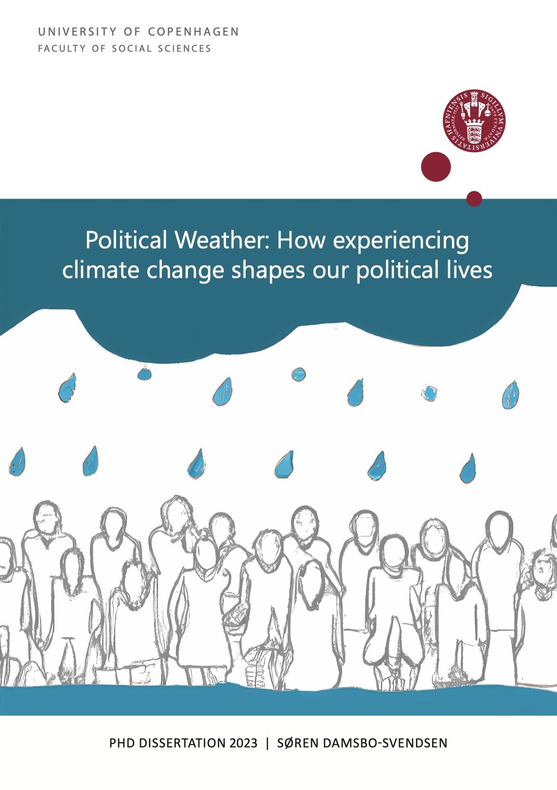

PhD thesis
Political Weather: How experiencing climate change shapes our political lives
- Submitted September 2023, defended January 2024
- Supervisors: Kasper M. Hansen and Frederik Hjorth
- Department of Political Science, University of Copenhagen
- The thesis can be downloaded here with the password “climatechange”.

Abstract
Global climate change is an increasingly large part of our lives and will remain so in the future. How will it affect us as political beings? This PhD dissertation investigates how citizens’ personal experience with weather and climate shapes political opinions, beliefs, and behavior toward climate change. Public support for the green transition is pivotal, and lack of public support can be an important barrier to climate action and adaptation. Because climate change is abstract, complex, and relatively new as a major political issue, political elites and the media could be driving public climate opinion. However, it is possible for voters to circumvent elite discourse and, instead, experience climate change directly in extreme and unusual weather events that are exacerbated by global warming. The changing weather, thus, has political causes, but what are the political consequences? Weather experiences provide unmediated information about climate change, but is personal experience translated into pro-climate opinions and behavior? Yes, it is, as the dissertation demonstrates.
The dissertation’s overall research question is: How are voters’ climate opinions and behavior shaped by media coverage of climate change and personal weather experiences? The key findings show that personal experience with more extreme weather, including high temperatures and local flooding, and increased media coverage of climate change raise climate concern and cause a shift toward more pro-climate beliefs, opinions, and behavior. As climate change is experienced more, now and in the future, this can foster public support for the creation of a more sustainable society. This is crucial knowledge because it shows that climate change, as it worsens, helps creating the conditions for a green transition. In that sense, the dissertation is relatively optimistic about the nature of the public’s response to climate change. It contributes with knowledge about how individuals translate their own personal experiences into political opinions and behavior, which is crucial to find viable political solutions to climate change.
The dissertation consists of a project frame, which sets the research questions up against existing theory and knowledge gaps, and four self-containing research articles: Article 1: Media, Article 2: Temperature, and Article 4: Turnout are published in International Journal of Public Opinion Research, West European Politics, and Electoral Studies, respectively, and Article 3: Flooding is under review at American Political Science Review. The four articles creatively combine large datasets and apply research designs that facilitate causal inference about the effects of personal experience on climate opinions and behavior. Denmark is the dissertation’s core research case. It is a comparatively well-functioning political system with low levels of political polarization, high political participation and trust, high consumption of non-partisan public service news, and high degrees of consensus about the reality and fundamental seriousness of climate change. Studying voters’ responses to climate change in a country like Denmark is ostensibly a conservative test of weather effects because of comparatively strong preexisting pro-climate opinions and a mild climate, which makes weather experiences less forceful than in other regions. Thus, the positive effects of weather and media coverage demonstrated in Denmark likely also apply to contexts with less attitude ceiling effects and stronger weather experiences. Meanwhile, widespread climate literacy and low levels of political polarization among voters, media, and political elites, may be the key to constructive public responses to climate change, as people see and feel the climate more in their everyday lives and local communities.